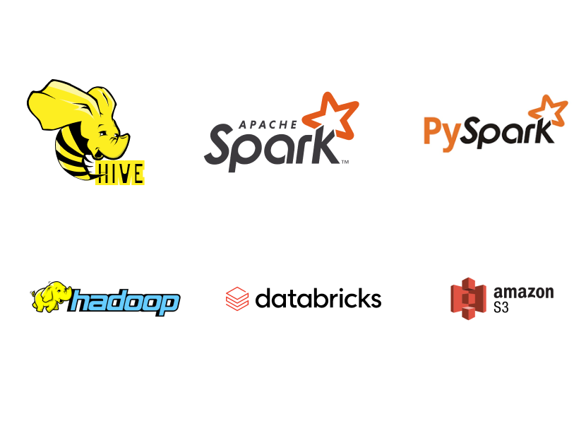
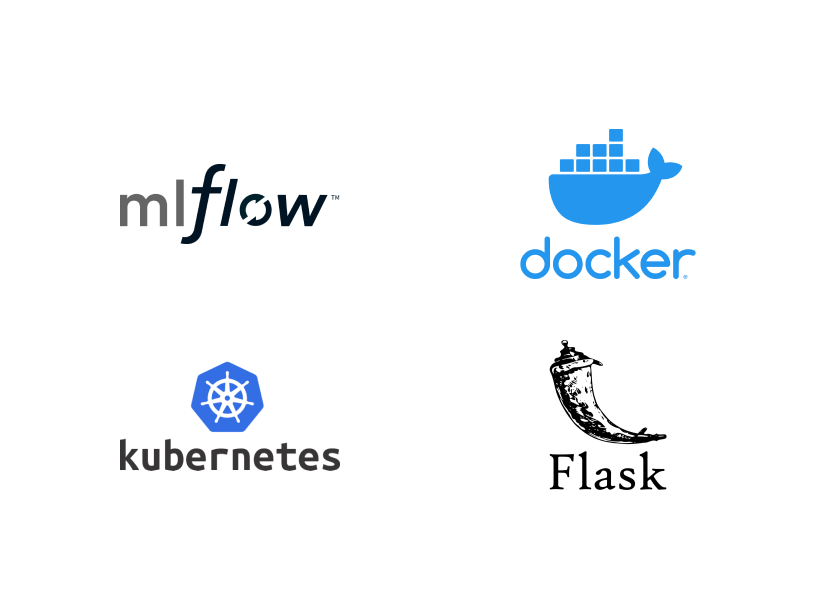
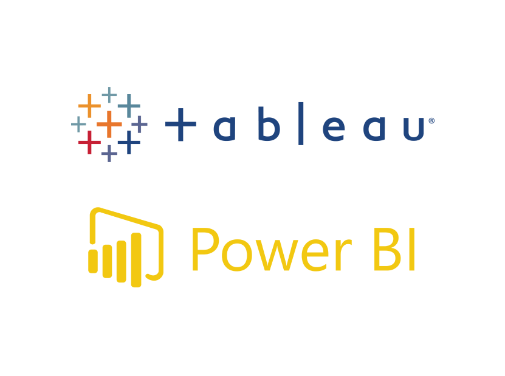
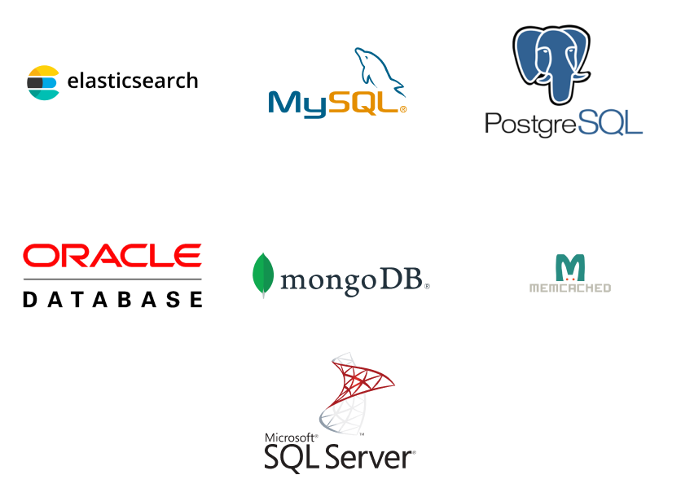
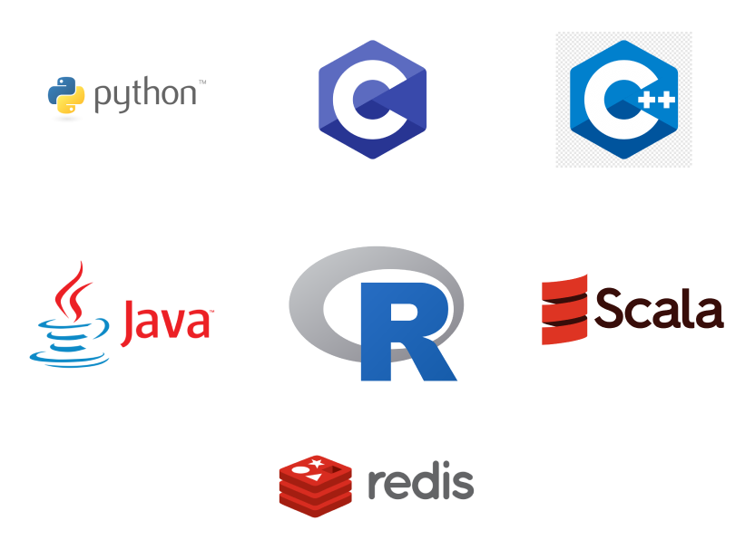

Transform organizations
towards data-based
decision making
We at Rainmaker BA have the required knowledge and experience to help you make the right decisions at the right time with the help of state of art analytics skills. Give us your data and we will bring transformation to your company that improves your bottom line.
Our Mission
“ Develop data-driven decision-making culture in companies that creates actionable intelligence for increased customer
understanding and improved operations ”
Our Services

Understanding Customer Sentiments
We can develop and deploy applications that helps to protect your reputation by finding negative comments in online
media instantly

Finding Customer Segments
Our customer segmentation analytics generate accurate insights about customer preferences, customer’s behaviors, needs,
and values

Targeting Most Valuable Customers
With the state of the art machine learning algorithms find your most profitable customers to increase company revenues

Improving Customer Support
Predicitve analysis by Rainmaker BA will enable companies to improve customer experience by anticipating and exceeding
customer expectations.

Churn Management
Analytics models developed by Rainmaker BA will enable you to identify dissatisfied customers and help you to entice
them back to your company with attractive offers and alternatives.

Price Elasticity of Brands
Analytic models by Rainmaker BA helps to predict the prices of your products based on the Brand Value. Insights will
enable you to find areas of improvement

Market Basket Analysis
This analysis is useful for retailers to uncover associations between various products sold by them. This approach tries
to identify various combinations of items that are purchased together frequently by buyers

Inventory Management
Predict future sales of your product with high accuracy and manage your inventory based on the predicted sales to
maintain good customer experience

Medical Diagnosis & Risk Prediction
Analytic models by Rainmaker BA based on artificial neural networks enables you to identify the cancer cell and tumors
by doing image classification

Time Series Analysis
Timeseries analysis by Rainmaker BA will enable you to find the trends, patterns, and seasonality in your sales data.
This will enable the forecasting of your sales and manage inventory by assessing the predicted sales patterns

Fraud Detection
Find your customer claims with a high propensity of being fraudulent and flag them for verification. This will help to
reduce payout loss due to fraud claims
Technologies We Use







Solutions

Establish a business analytics program in companies
Rainmaker BA can assist companies in planning for digital transformation and gain a competitive edge by creating
business value with the use of data and analytics. For achieving effective data and analytics transformations, several
factors must be managed...
Reporting to improve CEO/Executive decision-making process
The diffusion of the insights from the analytics program is crucial for success. Insights and interesting data findings
such as counterintuitive findings need to be shared in interesting formats, and through the proper channel. Establishing
streams of insights and data stories that are minimalistic...


Train Client employees in analytics
Having a cross-functional analytics team that encompasses functions of technology, business, operations, legal, and HR
can help full-scale adoption of analytics in every department. Lack of teamwork among these cross-sections of
departments can hamper analytics-driven initiatives. Poor collaboration creates the risk...
Secondment of analytics personal
Business analytical models develop overtime and hence need dedicated effort in the initial months. Also, the volume and
complexity of data require a stack of advanced technologies, including high-performance data stores, reliable and fast
data processing pipelines,...


Smart data capture for an analytics program
Implementation of analytics programs often fails due to the lack of or low quality of available data. The first action
Rainmaker BA performs on a new client is a maturity assessment on the company’s information architecture and data
sources based on analytical...
Some of our work
Rainmaker BA assisted a pharmaceutical company in Qatar for improving the performance of its e-commerce site.
The business questions answers through our analytics were- Which product categories are experiencing decreasing sales?
- Which product categories and experiencing constant sales?
- What are the best hours of the day and the best days in a week to promote products?
- Analysis of returns of the products.
Rainmaker BA assisted a process automation company based in Europe
Diagnostic analytics by Rainmaker BA assisted a process automation company based in Europe to answer the following questions- How is the social media performance of the company compared to competitors?
- What content in social media of the competitor is engaging the customers?
- What is the type and nature of social media content that will engage the customers?
- What channels and language variations need to be dropped for rationalizing the social media strategy?
Rainmaker BA assisted a health care product company for product diversification
Rainmaker BA assisted a health care product company for product diversification by answering the following questions based on past data- Should a separate brand variation be created for ladies?
- Should a specific advertising campaign be created to target ladies?
GET IN TOUCH WITH US
You will hear back from us within a 24 hours.
First Name
Last Name
Phone Number
Email address
Message

+968 9720 3900

sales@rainmakerba.com